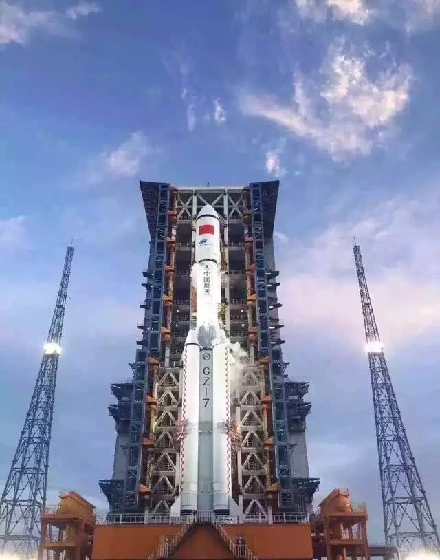

2020年3月16日
长征七号改装型运载火箭发
射失败
今天晚上21：34分，长征七号改中型运载火箭在中国文昌卫星发射场执行首次发射任务， 但火箭飞行过程中出现异常，导致发射任务失败，具体原因尚不明确。目前专家组正在组织对故障原因进行调查分析。
长征七号改中型运载火箭是长征七号运载火箭的改进型号，此次发射属于首次发射。 此次发射失败无疑是给去年刚为“胖五”成功发射庆祝欢呼的航天爱好者泼了一盆冷水，也给航天领域带来重大影响。
艰难的外空探索路
有时候我们不由得想问，这2020年到底怎么了？在过去的三个月，带给了我们太多的坏消息，但无论如何， 生活还得继续，我坚信，只要我们不放弃，很快就到拨开云雾见天明的一天！
